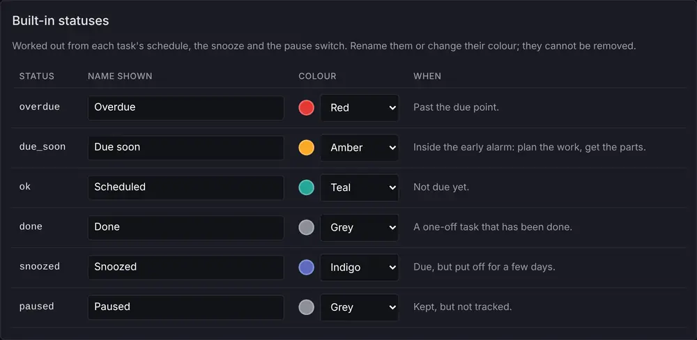
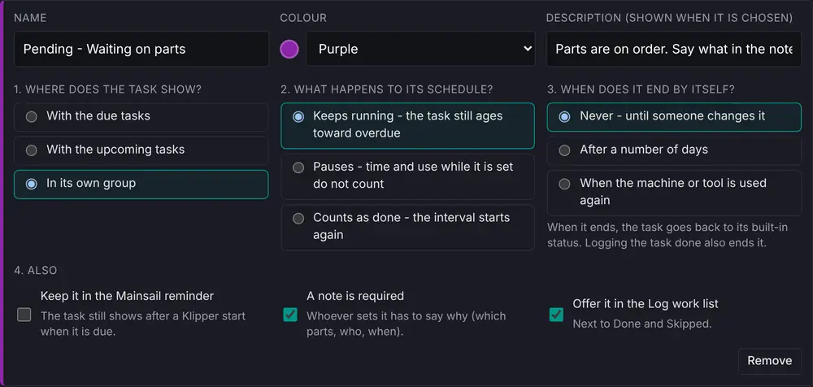

Admin › Status codes lists two kinds of status. The built-in statuses – Overdue, Due soon, Scheduled, Done, Snoozed and Paused – are worked out from each task's schedule, the snooze and the pause switch. Rename them or change their colour; they cannot be removed.

Your status codes are set by hand, from a task card or the Log work list: Pending – Waiting on parts, In progress, Deferred to next shutdown, or any you add with + Add a status code. Each answers four questions, and the portal applies the answers as rules.

| Question | Choices | What it does |
|---|---|---|
| 1. Where does the task show? | With the due tasks · in its own group · with the upcoming tasks | Where Due & upcoming lists it. Only with the due tasks keeps it in the overdue and due-soon counts. |
| 2. What happens to its schedule? | Keeps running · pauses · counts as done | Keeps running: the task still ages toward overdue. Pauses: time and use while the status is set do not count; the due point moves later by that much when it ends. Counts as done: the interval starts again when the status is set. |
| 3. When does it end by itself? | Never · after a number of days · when the machine or tool is used again | When it ends, the task goes back to its built-in status and the end is logged. Logging the task done also ends it. |
| 4. Also | Keep it in the Mainsail reminder · a note is required · offer it in the Log work list | Whether the start-up pop-up still shows the task when due; whether whoever sets it must say why; whether it appears next to Done and Skipped. |
A status code that tasks are set to cannot be removed until they are cleared. The three codes the portal starts with:
| Status code | Shows | Schedule | Ends |
|---|---|---|---|
| Pending – Waiting on parts | own group | keeps running | never (note required) |
| In progress | with the due tasks | keeps running | after 3 days |
| Deferred to next shutdown | with the upcoming tasks | pauses | when the machine is used again |